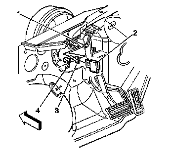
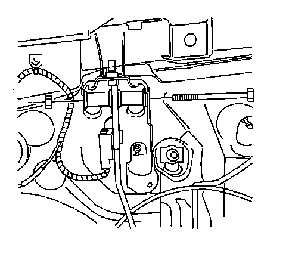

Brake Pedal Assy: Service and Repair
Brake Pedal Assembly Replacement
Removal Procedure

1. Remove the pushrod retaining clip (4).
2. Remove the stop lamp switch (2) and the pushrod (3) from the brake pedal stud (1).

3. Remove the nut from the brake pedal bolt.
4. Remove the brake pedal bolt.
5. Remove the brake pedal.
Installation Procedure
1. Install the brake pedal.
2. Install the brake pedal bolt.
Notice: Refer to Fastener Notice.
3. Install the nut to the brake pedal bolt.
Hold the nut with a wrench and tighten the brake pedal bolt to 47 N.m (35 lb ft).
4. Install the pushrod (3) and the stop lamp switch (2) to the brake pedal pin (1).
5. Install the pushrod retaining clip (4).